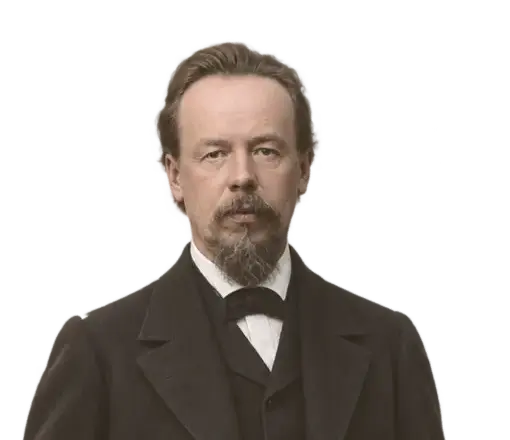

Александр Попов
{{ ui.availability }}Вы у проекции Попова. Можно задать три вопроса. Ответ услышат все рядом с проектором.
Настройки подключения
У радиоприёмника
Послушайте, как Попов объясняет свой опыт.
Текст ролика
Попов показан в полный рост и крупным планом. Он говорит: «Посмотрите на приёмник. Его антенна улавливает радиоволну. В ответ срабатывает реле, замыкается электрическая цепь, и мы слышим звонок».
Для разговора у проектора отсканируйте QR-код на площадке.

{{ ui.voiceStatus }}{{ ui.caption }}
-
{{ turn.question }}
{{ turnStatus(turn) }}
{{ turn.answer }}
{{ ui.notice }}